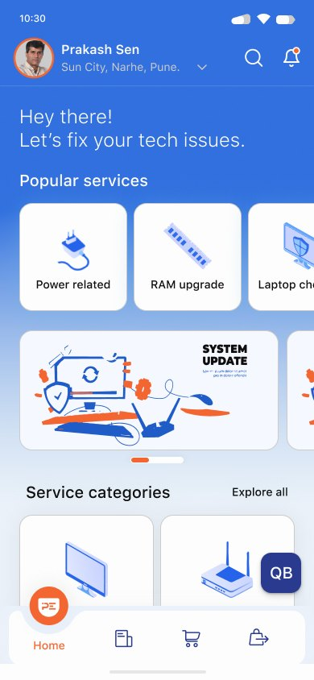
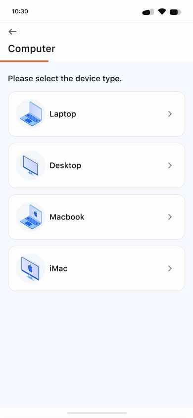
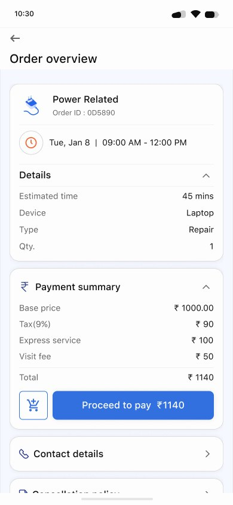
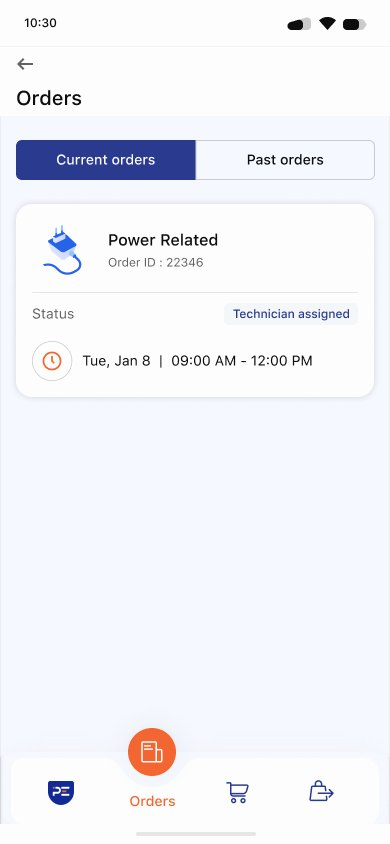
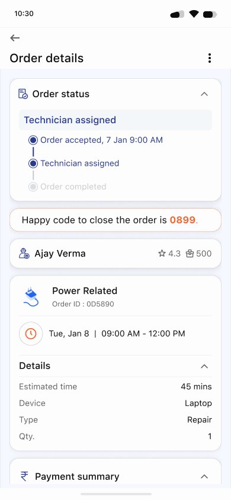
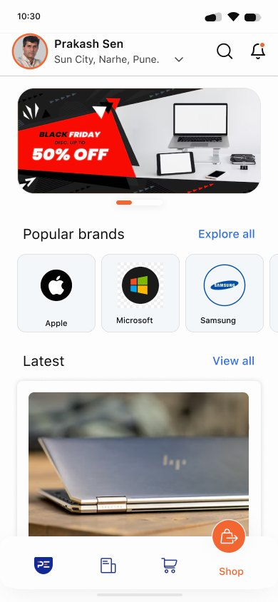
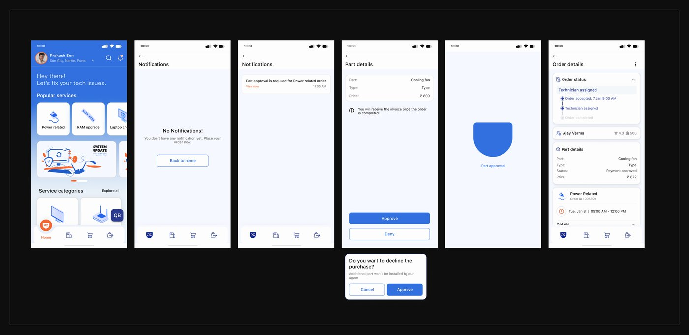
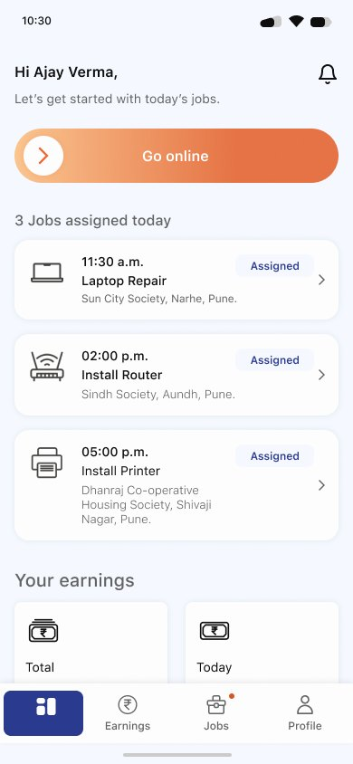
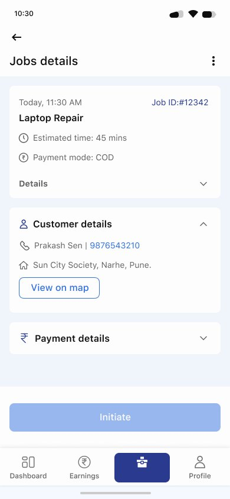

- Says
- “I want my focus to be on teaching, not fixing tech issues.”
- Needs
- Fast, trusted help when the projector or Wi-Fi fails mid-class, at a fair price.
The problem
When a laptop or Wi-Fi breaks, most people can’t describe what’s wrong, don’t know who to call, and fear being overcharged. They rely on neighbours or whoever is free, and technicians arrive with half the information they need.
PockIT wanted one platform for booking trusted technicians, tracking the job and paying fairly, with a separate app that lets technicians plan their day and get to customers fast. Businesses needed their own service catalogue, from CCTV and cabling to servers.
The constraint: bigger, better-known players already had stronger infrastructure and more budget. We were open with the client that a full-featured app could not win head-on, so we agreed to ship a lean app quickly, build the service infrastructure behind it, and expand once it gained traction.
My role
- Led UX across the customer and technician apps, from references and personas to hi-fi prototypes.
- Built five personas covering home users, an office IT admin and field technicians.
- Designed the information architecture through several rounds, and separate service catalogues for homes and businesses.
- Mapped user flows and wireflows for booking, tracking, part approval, rescheduling, cancelling and the refurbished-device shop.
- Set the visual direction from two moodboard routes, and built the component library.
- Led a two-person design team with one junior designer.
Who we designed for
- Says
- “I need someone I can trust to fix things when they go wrong.”
- Needs
- Low tech knowledge; worries about being overcharged or misinformed.
- Says
- “All I want is a stable Wi-Fi connection that works without constant interruptions, for my kids.”
- Needs
- A router installed with minimal effort and clear communication.
- Context
- Wants transparency from vendors and prompt updates.
- Needs
- Visibility into vendors, prompt updates and fast fixes for his teams.
- Context
- Juggles back-to-back requests across the city and tracks his hours by hand.
- Needs
- Less travel time, no manual tracking, and accurate descriptions before he arrives.
Key decisions
Name problems the way customers describe them
- Options
- A technical catalogue (operating system, utilities, connectivity, peripherals) or one built on devices and symptoms.
- Chose
- Customers first pick their device (laptop, desktop, MacBook, iMac, printer, Wi-Fi), then a symptom such as “My system is slow”, “Charging issue” or “Not sure of the issue”.
- Why
- Early IA rounds used technical terms. A note on the board asked the deciding question: “Will the user with low tech knowledge understand these terms?” Personas like Meena would not.
- Trade-off
- A longer, more granular service list behind the scenes, which the team had to keep mapped to technician skills.
No surprise charges
- Chose
- The full price breakdown (base price, tax, express service, visit fee) appears before payment. If a technician needs a new part, the customer gets a notification with the part and price, and approves or denies it in the app.
- Why
- Fear of being overcharged came up in almost every home persona.
- Trade-off
- An extra approval step mid-job, which can hold the technician up until the customer responds.
A happy code to close every job
- Chose
- Each order shows a four-digit happy code. The technician can only close the job when the customer shares it, so work is never marked done without the customer agreeing. The assigned technician’s name, rating and jobs completed are shown too.
- Why
- Trust was the core problem. The customer, not the technician, decides when the job is finished.
- Trade-off
- One more step at the end of every visit.
A technician app built around the day’s route
- Chose
- Technicians go online with one swipe and see today’s jobs with time, type and address. Each job shows the customer’s issue, contact, payment mode and a “View on map” link, and customers can upload photos of the problem when they book.
- Why
- Ajay’s pain points were travel time, manual tracking and vague descriptions that waste time on site.
- Trade-off
- Customers are asked for more detail while booking.
The solution
Customer app: from problem to booked



Tracking, trust and approvals




Technician app


Validation and impact
- Live, with 1,000+ users on the customer app.
- Shipped as a deliberately lean first version, so the client could set up technicians and operations before investing in more features.
Reflection
The design wasn’t the hardest problem; the market was. From our research, we told the client early why a full-scale app would struggle against better-funded, better-branded competitors with stronger infrastructure. Saying that openly let us agree on a smaller, faster first release instead of a feature race we couldn’t afford. I learned that scoping to the budget and the business is part of the design job, and that a product only earns its full version once the basics work.